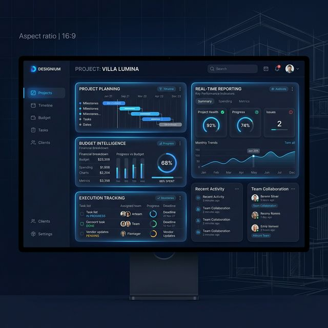

Five phases. Zero surprises. Complete clarity from start to handover.
We start every project by deeply understanding your requirements, design intent, lifestyle preferences, and scope. This phase eliminates ambiguity before a single decision is made.
A detailed execution roadmap is built with granular cost clarity. Every line item is accounted for. You know what you're getting and what it costs — before execution begins.
All teams, vendors, and workflows are aligned through HSI OS. Procurement is coordinated, roles are defined, and the system ensures everyone operates from the same plan.
Live dashboards track progress, costs, and milestones in real time. Alerts surface issues early. You — and your team — always know exactly where the project stands.
Predictable, high-quality completion. Every detail checked against the original scope. Your home is handed over with complete documentation, final cost reports, and zero loose ends.

Talk to the HSI team about your project. We'll walk you through exactly how we'll execute it.